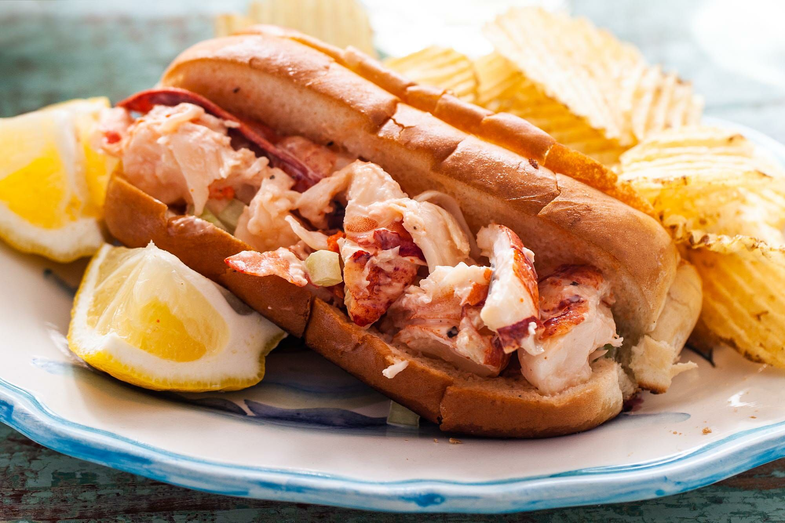

Lobster Roll

Description
A lobster roll consists of chunks of tender, sweet, cooked lobster meat barely napped in a thin coating of mayonnaise, all stuffed into a top-split, white-bread hot dog bun lightly toasted in butter. How do you make the best of such a simple creation? As with many things, it all comes down to attention to detail. Perfect selection and treatment of ingredients, balance, and above all, the ability to restrain yourself from over thinking. It's just a lobster roll, right?
Ingredients
- 4 lobster, about 1 1/2 pounds each
- 2 to 3 tablespoons mayonnaise
- 1/2 cup finely diced celery stalks
- 2 tablespoons finely minced chives
- Lemon juice
- Kosher salt and freshly ground black pepper
- 4 tablespoons unsalted butter
- 8 Top-split hot dog buns
Steps
- Adjust oven rack to middle position and preheat oven to 350°F. Meanwhile, kill each lobster by pressing the tip of a heavy chef's knife in the crack just behind the eyes in the center of the carapace. Press down firmly, then split head in half. Using kitchen towels, twist off tail and claws (including knuckles) from carapace. Save carapace for another use. Press each tail flat against the cutting board and insert wooden skewers along their entire length to keep them straight.
- Set a wire rack in a heavy-duty rimmed baking sheet. Place a steamer insert in the bottom of a large lidded stock pot and add 1-inch of water. Bring to a boil over high heat. Add a single layer of lobster claws and tails (about half the lobster) and cover pot. Let steam for exactly two minutes, then transfer to rack set in baking sheet (lobsters may still be twitching slightly—this is a reflex reaction. Don't worry, they are dead). Repeat with remaining lobster.
- Transfer to oven and roast until claws reach 135°F in the center as measured on an instant-read thermometer, about 7 minutes. Remove claws and set aside on large plate. Continue roasting until tails reach 135°F in center, 7 to 15 minutes longer (depending on exact shape of tails). Remove from oven and transfer to plate with claws.
- As soon as lobster is cool enough to handle, remove meat from shell using kitchen shears, lobster crackers, and/or the back of a heavy cleaver to help crack the shells (It's ok if the meat gets a little mangled).
- Cut meat into 1/2 to 1-inch bite sized pieces and transfer to a large bowl. Add mayonnaise and toss well to coat. Transfer to wire mesh strainer or large colander set in a bowl. Place in refrigerator and allow to drain and cool for at least 1 hour.
- Discard any drippings (or save to eat with bread). Toss lobster with celery and chives (if using). Season to taste with lemon juice (if using), salt, and pepper. Set aside.
- Melt 1 tablespoon of butter in a large, heavy bottomed skillet over medium-low heat. Swirl to coat pan. Add four buns with one cut side down. Cook, pressingon buns gently and moving them around the pan until golden brown on first side. Remove from pan, add another tablespoon of butter, and toast second side. Repeat with second batch of buns. Divide filling evenly amongst all the buns and serve immediately with pickles and potato chips.
Return To Home